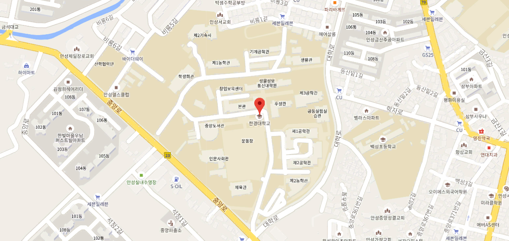

New-Technology ECO Magazine?
안녕하십니까! New Technology ECO Magazine입니다.
이 웹사이트는 다가오는 4차산업혁명에 대비하는 일부 해외 기업들의 자세와
친환경적 측면에서는 어떤 다양한 노력들을 하고 있는 지에 대한 정보들을 제공해줍니다.
그리고 이 곳에는 유명 기업 종사자와의 인터뷰 동영상, 사진(자료) 등이 많이 준비되어 있습니다.
끝으로 재밌게 보셨다면 간단한 설문지에 참여해주시면 감사하겠습니다.
※ 이 사이트는 Internet Explorer에 최적화 되어 있지만 동영상은 Chrome으로 실행 부탁드립니다.

Where
경기도 안성시 석정동 중앙로 327
궁금한 사항이 있으시거나, 만약 저희와 인터뷰를 하고 싶다면 '국립 한경대학교'를 방문해주시면 됩니다.
이메일: soclsrn524@naver.com(웹사이트 담당자)